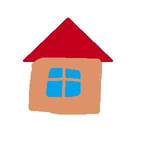
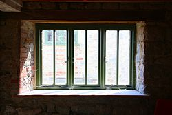

<!DOCTYPE html>
<html lang="en">
<head>
    <meta charset="UTF-8">
    <title>Pildikaart map/area kasutamine</title>
    <link rel="stylesheet" href="majaStyle.css">
</head>
<body>

</body>
<h1>Maja pildikaart</h1>
<h3>Hiire klik, akna või seina või katuse peale</h3>

<map name="Maja">


    <!-- ring coords(x,y,R) -->

    <!--aken ring coords(x,y,x1,y2) -->
    <area shape="rect" coords="98,140,158,190" href="aken.html" alt="Aken">
    <!--sein ring coords(x,y,x1,y2) -->
    <area shape="rect" coords="69,120,200,225" href="sein.html" alt="Sein">

    <!--polügoon coords(kõik koordinad vasakul paremalt) -->
    <area shape="poly" coords="47,120,135,35,225,120" href="katus.html" alt="katus">
</map>

<div id="ala">
    Aken on hoone, sõiduki või muu objekti seinas, katuses või ukses paiknev ava, mis tavaliselt võimaldab lasta sisse valgust ja õhku.
    
</div>


</html>